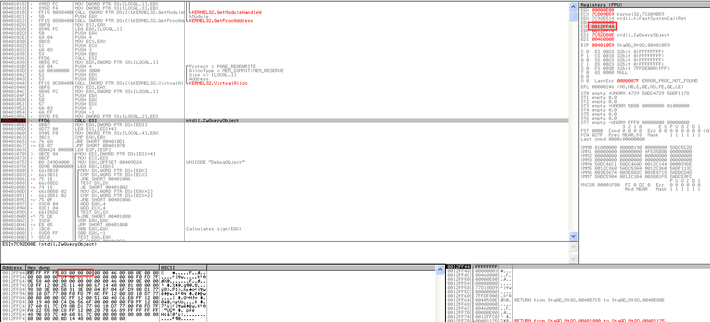
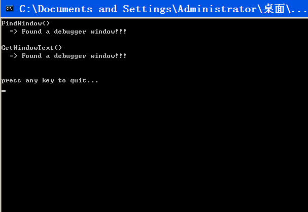

PEB
PEB中与反调试技术密切相关的成员有如下几个
1 | +0x002 BeingDebugged; UChar |
BeingDebugged成员是一个标志，用来表示进程是否处于被调试状态
Ldr, ProcessHeap, NtGloabFlag成员与被调试进程的堆内存特性相关
获取PEB结构体的地址1
2
3
4
5# 第一种方法
MOV EAX, DWORD PTR FS:[0x30]
# 第二种方法
MOV EAX, DWORD PTR FS:[0x18]
MOV EAX, DWORD PTR DS:[EAX+0x30]
BeingDebugged(+0x2)
通过IsDebuggerPresent() API可以获取PEB.BeingDebugged的值，若为1则表示进程处于被调试状态
IsDebuggerPresent()
IsDebuggerPresent()API获取PEB.BeingDebugged的值来判断进程是否处于被调试状态
破解方法：只要借助OD，将PEB.BeingDebugged的值修改为0即可
Ldr(+0xC)
调试进程时其堆内存就会出现一些特殊标识，表示它正处于被调试状态
其中最醒目的是，未使用的堆内存区域全部填充着0xFEEEFEEE，这证明正在调试进程
PEB.Ldr成员是一个指向_PEB_LDR_DATA结构体的指针，而_PEB_LDR_DATA结构体恰好是在堆内存区域中创建的，所以扫描该区域即可轻松查找是否存在0xFEEEFEEE区域
进入PEB.Ldr地址（251ea0）向下拖动滚动条
破解方法：只要将填充着0xFEEEFEEE的区域全部覆写为NULL即可
注意：该方法只适用于WindowsXP，而在Windows Vista以后的系统中则无法使用。另外，利用附加功能将运行中的进程附加到调试器时，堆内存中并不出现上述标识。
ProcessHeap(+0x18)
PEB.ProcessHeap成员是指向HEAP结构体的指针
GetProcessHeap() API可以获取PEB.ProcessHeap结构体的地址
HEAP结构体中Flags(+0xC)和ForceFlags(+0x10)和反调试相关，进程正常运行时，Heap.Flags的值为0x2，Heap.ForceFlags的值为0x0，进程处于调试状态时这些值会改变。
破解方法：修改HEAP.Flags =2, HEAP.ForceFlags=0
注意：该方法只适用于WindowsXP，而在Windows Vista以后的系统中则无法使用。另外，利用附加功能将运行中的进程附加到调试器时，也不会有上述特征
NtGlobalFlag(0x68)
调试进程时，PEB.NtGlobalFlag会被设置为0x70 检测该成员的值就可以判断进程是否处于调试状态
注意：利用附加功能将运行中的进程附加到调试器时，不会有上述特征。
练习：StaAD_PEB.exe（在WIN XP下测试）
下面调试StaAD_PEB.exe来学习基于PEB的反调试技术 以及相应的破解之法 在OD中按下F9运行程序 所有项目都显示处于调试之中
破解之法
PEB.BeingDebugged
跟踪代码 401036地址处遇到调用IsDebuggerPresent（）API代码 如图所示 F7进入代码 只要将EB.BeingDebugged值修改为0就可以破解
PEB.Ldr
继续调试会遇到PEB.Ldr反调试代码
40107b处的CALL EAX指令用来调用ntdll.NtCurrentTeb（）API 40107d地址处的MOV指令将PEB保存到EBX寄存器 地址401090~40109e间的指令用来将局部变量（[EBP-20]~[EBP-2C]）初始化为EEFEEEFE值 而4010A1地址处的MOV指令用来将PEB.Ldr地址储存到ESI寄存器 继续跟踪到4010C7处：
EDI寄存器中储存着PEB.Ldr地址读取4个字节值 我们看到ECX中的值为EEFEEEFE 我们转到EDX的数据窗口 并将EEFEEEFE区域用NULL覆盖 F2在4010FB地址处设置断点 F9跳出循环
PEB.ProcessHeap
继续调试 看到代码：
以上代码检测PEB.ProcessHeap.Flags和PEB.ProcessHeap.ForceFlags的值来反调试 将他们分别修改为2和0破解反调试
PEB.NtGlobalFlag
继续运行 遇到基于PEB.NtGlobalFlag的反调试代码
将401168处的[EBX+68]即为PEB.NtGlobalFlag 将其值修改为0即可
运行完的窗口
NtQueryInformationProcess API
1 | NTSTATUS WINAPI NtQueryInformationProcess( |
为该函数第二个参数ProcessInformationClass设定特定的值，函数执行结果会保存在第三个参数ProcessInformation中
第二个参数为枚举类型，其中与反调试相关的参数有ProcessDebugPort（0x07）,ProcessDebugObject-Handle(0x1E),ProcessDebugFlags(0x1F)
ProcessDebugPort（0x07）
非调试状态下debugport == 01
2
3
4
5
6
7
8
9
10// ProcessDebugPort (0x7)
DWORD dwDebugPort = 0;
pNtQueryInformationProcess(GetCurrentProcess(),
ProcessDebugPort,
&dwDebugPort,
sizeof(dwDebugPort),
NULL);
printf("NtQueryInformationProcess(ProcessDebugPort) = 0x%X\n", dwDebugPort);
if( dwDebugPort != 0x0 ) printf(" => Debugging!!!\n\n");
else printf(" => Not debugging...\n\n");
checkRemoteDebuggerPresent()API可以用来检测进程是否处于被调试状态，与IsDebuggerPresent API不同的是，它不仅可以检测当前进程是否处于被调试状态，也可检测其他进程。该函数的实现中使用了NtQueryInformationProcess(ProcessDebugPort) API
ProcessDebugObjectHandle(0x1E)
1 | // ProcessDebugObjectHandle (0x1E) |
第二个参数为ProcessDebugObjectHandle时，第三个参数返回为被调试对象句柄，当返回NULL时说明进程处于非调试状态
ProcessDebugFlags(0x1F)
1 | // ProcessDebugFlags (0x1F) |
ProcessDebugFlags参数用于获取调试标识，DebugFlag的值若为0则处于调试状态，若为1则处于非调试状态
NtQuerySytemInformation API
检测系统是否以调试模式运行（WinDbg调试需要）
之前进程隐藏的章节中使用过ZwQuerySytemInformation API来获取进程列表，用户层Zw和Nt没什么区别，所以这里使用Zw也是可以的
1 | NTSTATUS WINAPI NtQuerySystemInformation( |
SystemInformationClass参数中指定需要的系统信息类型，将某结构体的地址传递给SystemInformation参数，API结束时，该结构体中就填充着相关的信息
SystemKernelDebuggerInformation(0x23)
1 | NtQuerySystemInformation = (NTQUERYSYSTEMINFORMATION) |
DebuggerInfo.DebuggerEnabled==1时为调试状态
破解方法：Win XP: 编辑boot.ini 删除/debugport=com1 /baudrate=115200 /Debug
Win7: cmd执行 bcdedit /debug off
NtQueryObject API
系统中某个调试器调试进程时，会创建一个调试对象类型的内核对象。检测该对象是否存在即可判断是否有进程正在被调试
ntdll!NtQueryObject可获得系统各种内核对象信息1
2
3
4
5
6
7NTSTATUS NtQueryObject(
_In_opt_ HANDLE Handle,
_In_ OBJECT_INFORMATION_CLASS ObjectInformationClass,
_Out_opt_ PVOID ObjectInformation,
_In_ ULONG ObjectInformationLength,
_Out_opt_ PULONG ReturnLength
);
调用NtQueryObject（）API时 先向第二个参数OBJECT_INFORMATION_CLASS ObjectInformationClass赋予某个值 调用API后 包含相关信息的结构体指针就被返回第三个参数PVOID ObjectInformation
OBJECT_INFORMATION_CLASS是枚举类型1
2
3
4
5
6
7typedef enum _OBJECT_INFORMATION_CLASS {
ObjectBasicInformation,
ObjectTypeInformation,
ObjectNameInformation,
ObjectAllInformation, //3
ObjectHandleInformation
} OBJECT_INFORMATION_CLASS;
ObjectAllInformation(0x3)
使用ObjectAllInformation可获得系统所有对象信息，然后从中检测是否存在调试对象
练习：StaAD_NtQO.exe
在OD中按下F9运行程序StaAD_NtQO.exe
破解之法
重新载入 在401059处设置断点
位于401059处的代码是调用ntdll!NtQueryObject（）API 查看栈可以发现第二个参数的值为3 将其修改为0后运行程序 就无法探测到调试器的存在

ZwSetInformationThread API
强制分离被调试者与调试者的技术，使用该API被调试者可将自身从调试器中分离出来（使调试进程终止运行，同时终止自身进程），该API不会对正常运行的程序(非调试运行)产生任何影响。
1 | typedef enum _THREAD_INFORMATION_CLASS { |
ZwSetInformationThread(函数是一个系统原生API ( System Native API)，顾名思义，它是用来为线程设置信息的。该函数拥有2个参数，第一个参数ThreadHandle用来接收当前线程的句柄，第二个参数ThreadInformationClass表示线程信息类型，若其值设置为ThreadHideFrom-Debugger(0x11)，调用该函数后，调试进程就会被分离出来。ZwSetInformationThread( API不会对正常运行的程序(非调试运行)产生任何影响，但若运行的是调试器程序，调用该API将使调试器终止运行，同时终止自身进程。
练习：StaAD_ZwSIT.exe
首先在OllyDbg调试器中打开示例程序StaAD_ ZwSIT.exe, 然后分别在401027与401029地址处按F2键设置断点，按F9运行程序。
如图所示，调试器在401027地址的断点处暂停，位于该地址处( 401027 )的CALL ESI 指令用来调用ntdll.ZwSetInformationThread( API。按F9键继续执行401027地址处的指令，这样就会分离出被调试进程并终止运行。而且，OllyDbg调试器将无法正常调试401029地址处的指令，出现运行错误。
破解之法
简单的破解思路是:调用401027地址处的ZwSetInformationThread() API前，查找存储在栈中的第二个参数ThreadInformationClass值,若其值为ThreadHideFromDebugger(0x11),则修改为0后继续运行即可
TLS回调函数
TLS回调函数是反调试技术中常用的函数,像前面介绍的技术一样,如果不明白其工作原理，使用时就会束手无策。
其实，我们并不能将TLS回调本身看作- -种反调试技术，但是由于回调函数会先于EP代码执行，所以反调试技术中经常使用它。在TLS回调函数内部使用IsDebuggerPresent()等函数判断调试与否 然后再决定是否继续运行程序
ETC
首先，要明白我们应用反调试技术的目的在于防止程序遭受逆向分析。不必非得为此费力判断自身进程是否处于被调试状态。-个更简单、更好的方法是,判断当前系统是否为逆向分析专用系统( 非常规系统),若是，则直接停止程序。这样就出现了各种各样的反调试技术，这些技术都能从系统中轻松获取各种信息( 进程、文件、窗口、注册表、主机名、计算机名、用户名、环境变量等)。这些反调试技术通常借助Win32API获取系统信息来具体实现。下面简单介绍几个例子
(1)检测OllyDbg窗口<—FindWindow().
(2)检测OllyDbg进程<—CreateToolhelp32Snapshot()
(3)检查计算机名称是否为“TEST” “ANALYSIS”等<—GetComputerName()
(4)检查程序运行路径中是否存在“TEST”、“SAMPLE”等名称<—GetCommandLine()。
(5)检测虚拟机是否处于运行状态(查看虚拟机特有的进程名称<—VMWareService.exe、VMWareTray.exe、VMWareUser.exe等)
练习：StaAD_FindWindow.exe
首先在OllyDbg调试器中打开示例程序StaAD_FindWindow.exe F9运行

破解之法
在401023处设置断点运行
图中的代码中共有3处调用FindWindow() API。40101 E地址处的PUSH 409D10指令中，地址409D10指向Window Class名称字符串，它是FindWindow( API的第一个参数。 转到409D10地址处，使用NULL覆盖Window Class名 称字符串缓冲区，那么FindWindow( API将无法探测到相应调试器。
接下来使GetWindowText()API失效 在401093地址处设置好断点并运行程序
调用GetWindow TextWO API的代码在4010B4地址处。若想正常调用GetWindowTextW() API,就不能执行4010AD地址处的条件跳转指令 修改标志位的值实现跳转。要实现这一点， 可以直接操作条件跳转语句，也可以将其上GetDesktopWindow()与GetWindow() API的返回值( EAX寄存器)修改为NULL值。当然，钩取FindWindow() API与GetWindowText() API也是非常棒的方法。